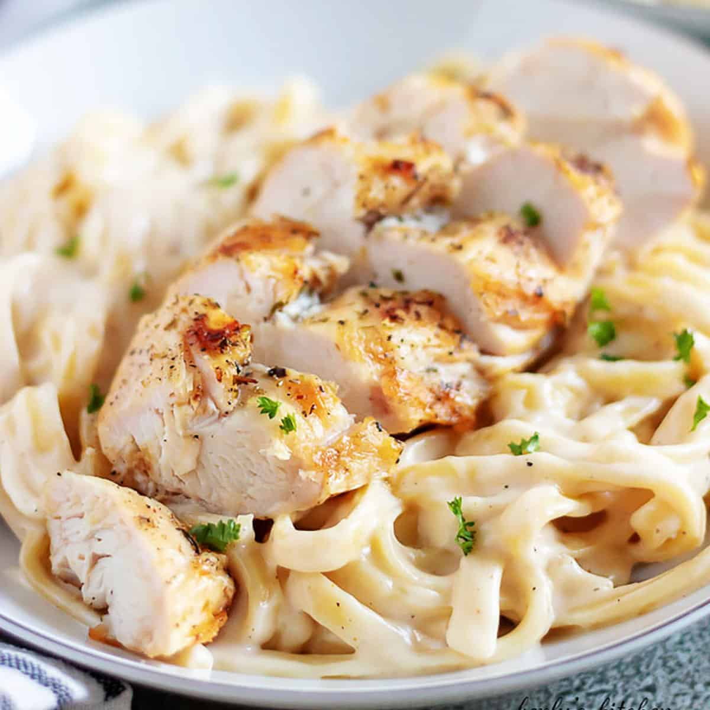

Chicken Alfredo

A heavenly chicken alredo pasta with ricotta cheese. Serve with garlic bread.
Prep Time: 20 minutes
Cooking Time: 15 minutes
Total: 35 minutes
Yields: 8 servings
- 1 pound fettucini pasta
- 1 1/2 cups butter, divided
- 1 pound skinless, boneless chicken breast - diced
- 2 (16 ounce) containers whole milk ricotta cheese
- 1 pint heavy cream
- 1 teaspoon salt
- 1 cup grated parmesan cheese
Directions
- Bring a large pot of lightly salted water to a boil. Add fettuccini and cook for 8 to 10 minutes
or until al dente; drain.
- Melt 2 tablespoons butter in a large skillet over medium heat. Saute chicken until no
longer pink and juices run clear.
- In a large saucepan combine ricotta cheese, cream, salt, Parmesan cheese and remaining butter. Cook over medium heat
until well combined, about 10 minutes. Stir in cooked fettuccini and chicken; cook until heated through.
Nutrition Facts
Per serving: 1014 calories; 39g protein; 47g carbohydrates; 76g fat; 272mg cholesterol; 845mg sodium